GitHub
What is Git?
Git is a popular version control system. It was created by Linus Torvalds in 2005, and has been maintained by Junio Hamano since then.
It is used for:
Tracking code changes
Tracking who made changes
Coding collaboration
What does Git do?
Manage projects with Repositories
Clone a project to work on a local copy
Control and track changes with Staging and Committing
Branch and Merge to allow for work on different parts and versions of a project
Pull the latest version of the project to a local copy
Push local updates to the main project
W3 Schools has information and tutorials on Git and Github.
Where to start:
First make a GitHub account.
Next make a repository by clicking the green button.
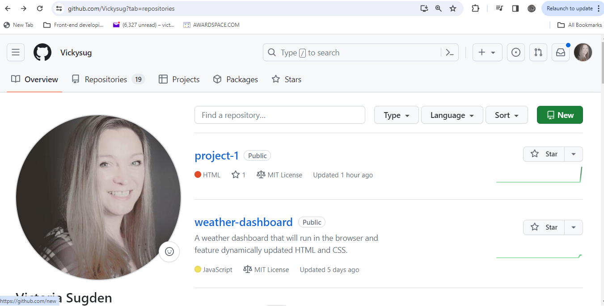
Give your project a name, check the README and MIT licence then create.
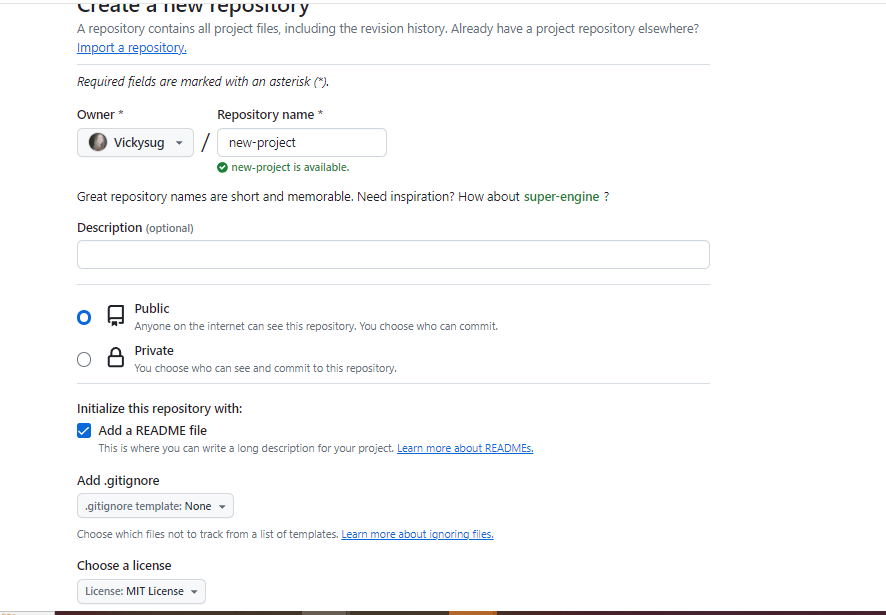Create SSH Keys
This allows your local area to communicate with remote area (GitHub). You will need to use your terminal for this.
Commands to use:
ls -al ~/.ssh - to see if ssh keys are already present (keys end in .pub)
ssh-keygen -t ed25519 -C "your_email@example.com" - to create new key (follow prompts)
eval "$(ssh-agent -s)"
ssh-add - to add private key to the ssh-agent
(copy ssh keys to clip board and add to GitHub)
ssh -T git@github.com - to see if key is set up correctly type 'yes' to verify
fingerprint matches
Copy the SSH keys as shown below
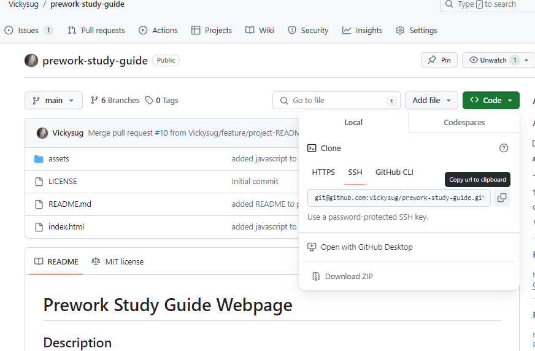
Cloning
Next you can clone the new project to your local area (laptop).
To do this first ensure you are in the right directory (eg desktop).
To do this use cd .. to go back.
Type cd desktop.
Next type git clone and paste (right click) the SSH keys then click enter.
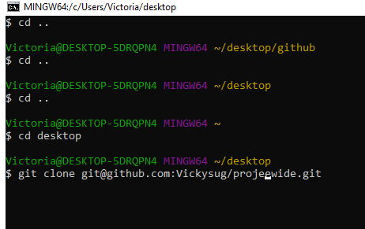
From here, open Visul Studio Code (or other code editor) and open the folder you have just cloned.
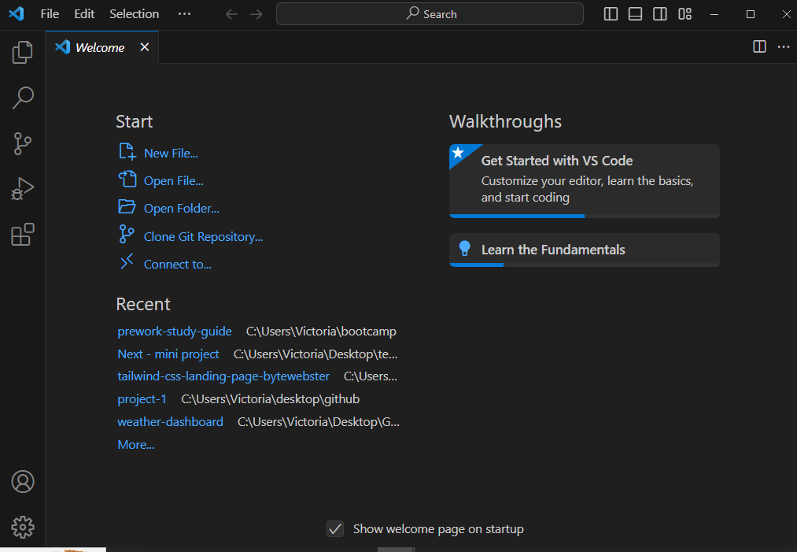
Push to repo:
After adding new files, such as boilerplate HTML, CSS and Javascript, you can push (or save) all the contents of the folder to GitHub in the repository as follows:
git status
git add -A
git commit -m "message"
git push origin main
You can use the above commands in your terminal to save work everytime you make changes.
Creating Branches:
When working as a team on a project, we don't want to save changes to the main branch until it has been checked by colleagues.
In order to do this we can create branches.
To create a branch, first you must be in the main repository in your terminal and must make sure you have the up to date version.
To do this, type the following commands:
git status
git checkout -b name-of-new-branch
git status (to check the file has been created)
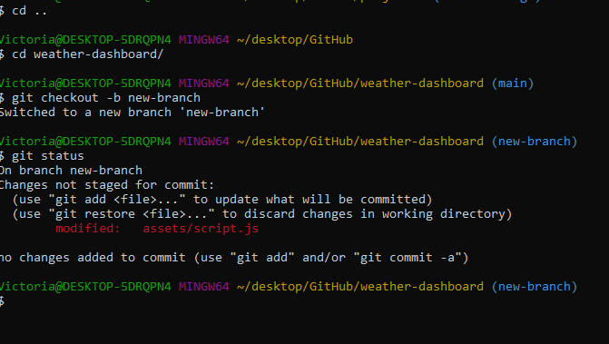
Find a branch already created:
To find a branch that you or someone else has created - or to see what branches there might be, assuming you are in the uptodate main version, use the following command:
git branch -a
This will list all branches that are part of the main repo.
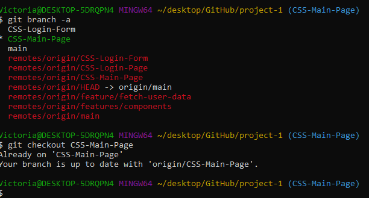
You can then select a branch by using the following command:
git checkout name of branch
Pushing a branch to repo:
To push your branch to the repository (or save your work to the GitHub project):
Use the following comands in your terminal:
git add .
git commit -m"message to explain update"
git push origin main name-of-new-branch
Pull Requests:
After pushing your branch, GitHub with create a pull request:
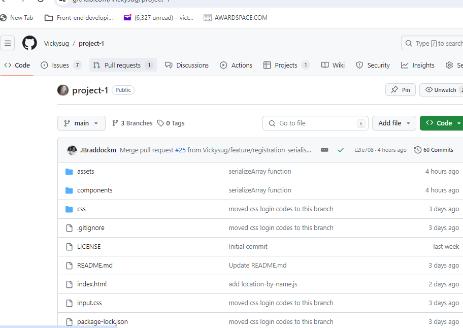
Creating a group project board:
As a team, a repository can be made into a group-project by creating a collaborative environment with ToDo/In progress/Completed tasks. These tasks can be assigned to team members.
To create this, first go to the repository and click on projects at the top of the page.
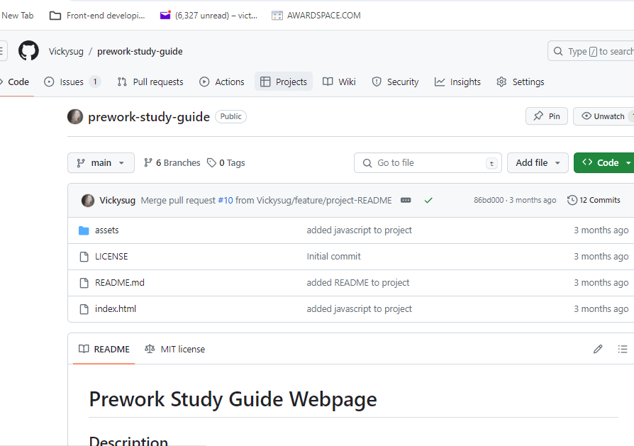
Next, name the project and click "New Project.
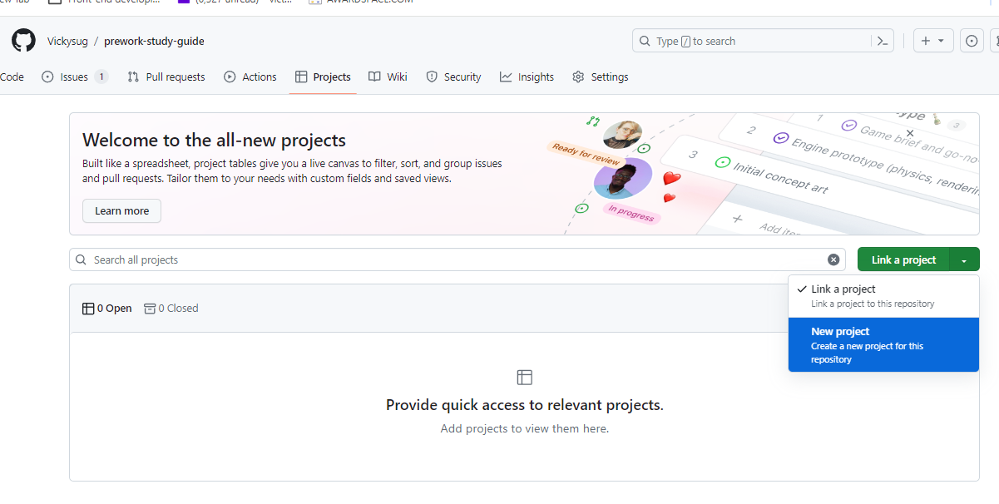
Once in the group project, click the pen edit at the side of the project name. In here you can add group members by email address or GitHub name.
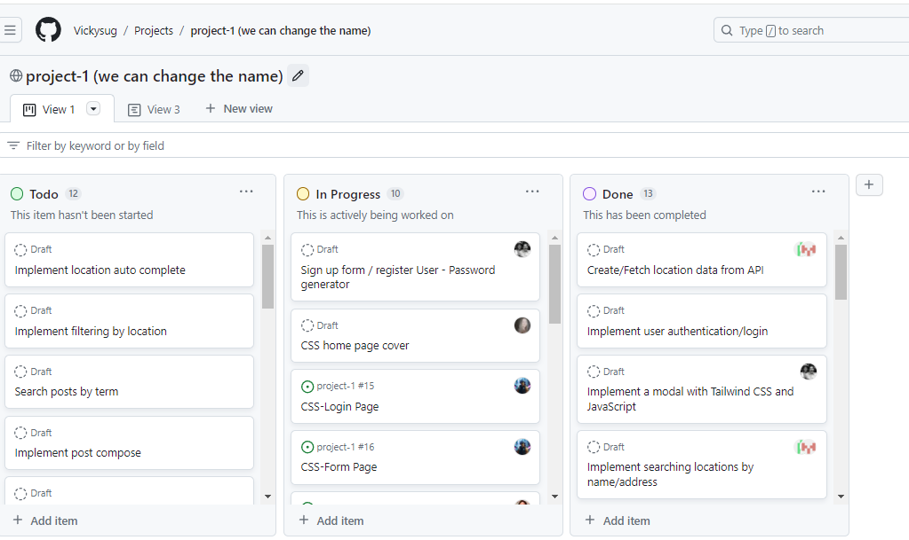
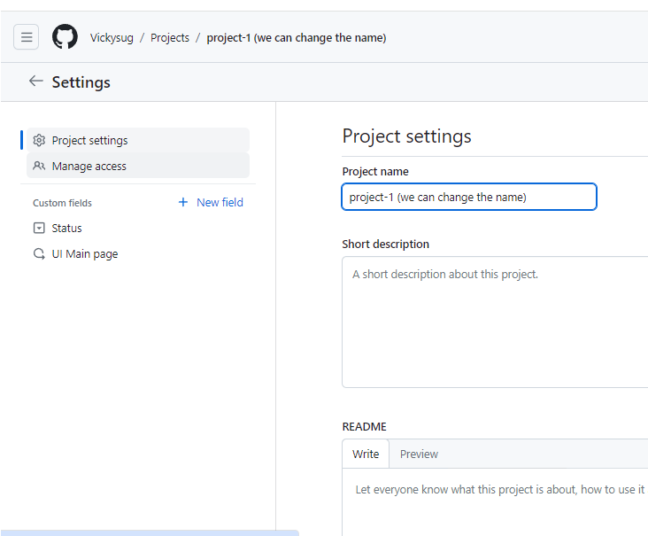
Select "Manage access and Invite collaborators in the space provided. They will need to accept the invitation via email.
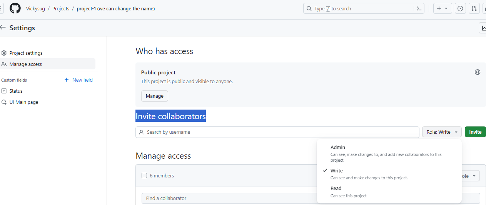
There is an option to assign levels of access - "Admin" , "Write" and "Read". I added everyone as admin for our group.